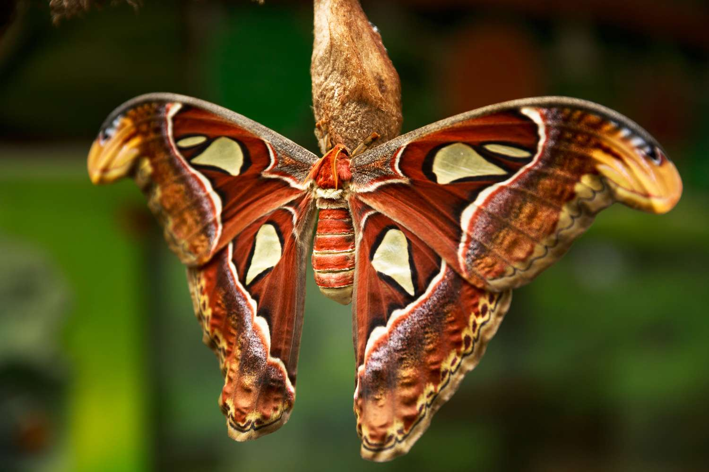

Curiosidades sobre algumas espécies interessantes!

São consideiradas uma das espécies de insetos noturnos mais bonitos da América do Norte. Seu tempo de vida é curto, variando de 7 a 10 dias, elas não possuem boca e nem sistema digestivo, vivendo somente enquanto sua energia de lagarta durar
O nome "Luna" é derivado das grandes marcas em formato de meia-lua presentes em suas asas, também por seu comportamento noturno.
Ao contrario da fase adulta onde não consumen nada, a lagarta das mariposas luna são expremamente ativas e se alimentam continuamente de folhas de árvores.

Essas mariposas são consideiradas umas das mais surpriendentes em tamanho.
Com um tamanho colossal de uma envergadura de até 30 cm e chegando até 400cm² de área, ela só perde para a mariposa-bruxa-branca e pra mariposa-hercules
A mariposa-atlas parece ter um método inato para afugentar predadores: as pontas de suas asas se assemelham à cabeça de uma cobra. Quando a mariposa-atlas se sente ameaçada, ela move lentamente as asas imitando uma cobra para afastar possíveis predadores. Como as cobras são encontradas nas mesmas áreas que a mariposa-atlas, e como seus principais predadores, aves e lagartos, são caçadores visuais, é provável que essa marcação nas asas seja uma adaptação para a sobrevivência.
Para escapar de seu principal predador, ela possui um órgão auditivo no tórax que é capaz de detectar os ultrassons emitidos por morcegos no escuro, permitindo manobras rápidas de fuga
Suas asas são brancas com linhas em tons de marrom e cinza escuro. Esse padrão imita perfeitamente a textura de líquens e cascas de árvores, tornando-a quase invisível quando pousa nos troncos